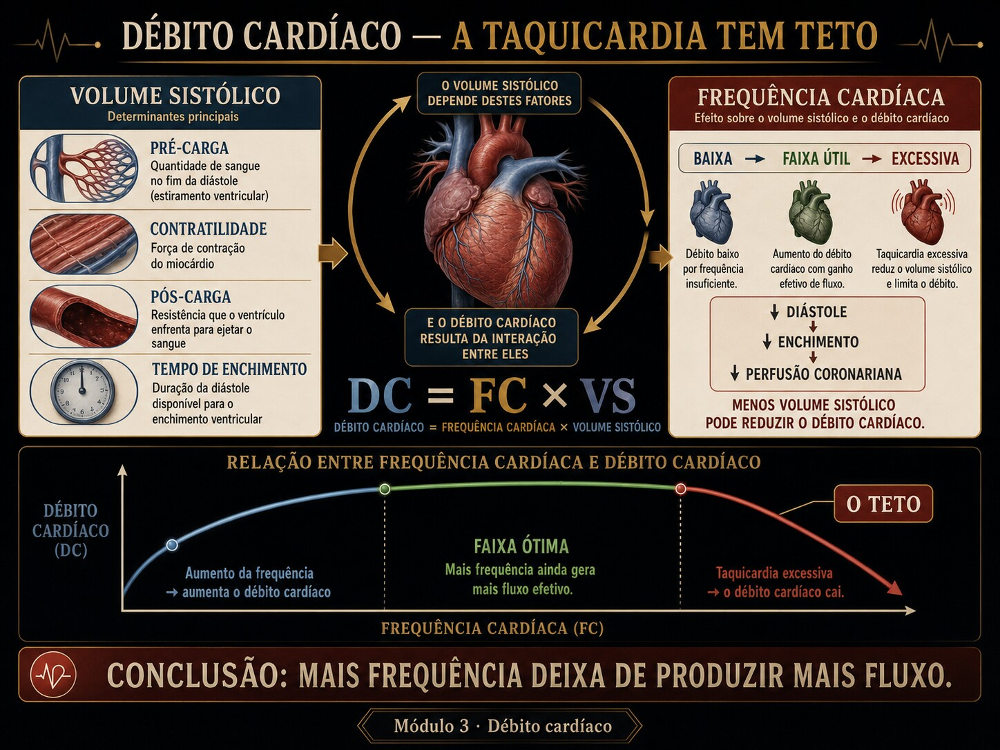

DC = FC × VS parece dizer que mais batimentos é mais débito. Mas cada batimento precisa de tempo para encher — e a diástole encurta antes da sístole. Acima de um ponto, acelerar derruba o débito.

Fig. 3 · O teto da taquicardia. A frequência inicialmente eleva o débito, mas perde eficiência quando encurta enchimento e perfusão coronariana.
FC 135, e o débito caindo
Cinco atos. A variável escondida é o que a frequência faz com o enchimento. (Caso didático; nenhuma conduta é prescrita.)
Ato 1 · a porta
Paciente taquicárdico sustentado. "FC 135 — o coração está trabalhando bastante, deve estar compensando."
FC 135ritmo sinusalextremidades frias
Ato 2 · a leitura ingênua
Confia-se que FC alta = DC alto. Mas a perfusão periférica diz o contrário.
Ato 3 · a fenda
DC = FC × VS. Se VS despencou, FC 135 pode render menos que FC 70. O produto engana quando se olha só um fator.
Ato 4 · decompor
A diástole (o tempo de encher) é o que encurta primeiro com a taquicardia. Em FC 135 sobra pouco tempo de enchimento → VS cai mais rápido do que a FC sobe → o produto desce.
Ato 5 · a ferramenta
A curva DC×FC mostra o pico e a queda. É o que o Instrumento desenha.
▸ Revelar a variável escondida
A variável é o tempo diastólico de enchimento, que cai com a FC e arrasta o VS junto. FC 135 está além do pico da curva DC×FC — acelerar mais reduz o débito. FC alta não é "coração forte"; é bandeira.
Trilha socrática
Siga as setas até o teto.
DC = FC × VS — mais FC, mais DC?
Só se o VS não cair. O produto depende dos dois fatores, e eles não são independentes.
O que liga FC e VS?
O tempo de enchimento. Cada ciclo dura 60/FC; a sístole é quase fixa, então o que encurta com a taquicardia é a diástole.
E menos diástole?
Menos tempo para encher o ventrículo → menor volume diastólico final → VS cai.
Quem ganha a corrida, FC ou VS?
No começo a FC ganha (DC sobe). Passado o pico, a queda do VS supera o ganho de FC → o DC desce.
Então FC 130 é bom sinal?
Pode ser o contrário: se está além do pico, é taquicardia que engana — DC abaixo do repouso, com sinais de má perfusão.
E a bradicardia extrema?
O outro lado: VS até cheio, mas pouquíssimos batimentos → DC também limitado. O ótimo é uma janela, não "quanto mais rápido melhor".
Instrumento · a curva DC × FC ao vivo
A identidade DC = FC × VS e a curva que ela esconde. O ponto de operação e o pico migram com o enchimento basal.
DC = FC × VS · VS limitado pela diástole disponível
DC × FC (VS diastólico-limitado)operação (FC atual)pico
VS basal = teto de enchimento (pré-carga/contratilidade). O VS atingido cai conforme a FC come a diástole.
Lab · ache o teto
Cenários ou as duas alavancas. O veredito vira e os banners dizem de que lado do pico você está.
DC × FCoperaçãopico
Débito no ponto de operação
—
Reserva cronotrópica. Abaixo do pico: subir a FC ainda rende DC, porque ainda sobra diástole para encher.
Além do teto. A diástole ficou curta demais: o VS desaba mais rápido do que a FC sobe — acelerar mais reduz o débito.
Taquicardia que engana. FC alta com DC abaixo do repouso. O número alto da frequência mascara o débito baixo.
Bradicardia limitante. VS até cheio, mas poucos batimentos: o produto cai por falta de frequência, não de enchimento.
Avaliação · tutor gráfico
Cada questão desenha a curva DC×FC computada ao vivo. Leia o pico, a operação e a queda — feedback persistente.
0 / 0 respondidas
Honestidade do modelo
Material educacional · não é suporte à decisão. Ensina-se o mecanismo do teto da taquicardia — nunca dose, alvo ou conduta para um paciente específico.
→ A sístole é tratada como duração ~constante (na realidade encurta um pouco com a FC) — idealização que coloca o colapso de enchimento em FC mais alta do que o exato. → O enchimento é um saturante de constante única, sem complacência diastólica não-linear nem contribuição atrial. → O VS basal resume pré-carga e contratilidade num só número. → Farmacologia (mecanismo): cronotrópicos movem a FC ao longo do eixo; inotrópicos/volume sobem o VS basal e elevam a curva inteira — sem dose. Os números são exatos dentro do modelo.